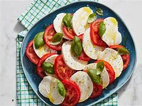

Caprese Salad

Discription
Caprese Salad is a refreshing and simple Italian dish that highlights the flavors of fresh tomatoes, mozzarella cheese, and basil. It's a perfect appetizer for any occasion, especially during the summer when these ingredients are at their peak.
Ingredients
- 4 large ripe tomatoes
- 1 pound fresh mozzarella cheese
- Fresh basil leaves
- Extra virgin olive oil
- Balsamic glaze
- Salt and pepper to taste
Steps
- Slice the tomatoes and fresh mozzarella into 1/4-inch thick slices.
- Arrange the tomato and mozzarella slices on a serving platter, alternating and slightly overlapping.
- Tuck fresh basil leaves between the tomato and mozzarella slices.
- Drizzle extra virgin olive oil and balsamic glaze over the salad.
- Season with salt and pepper to taste.
- Serve immediately and enjoy the vibrant flavors!